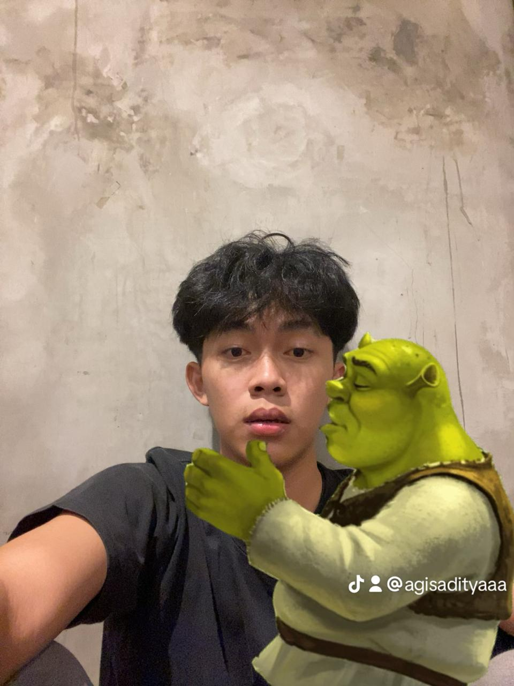

Lulusan UMP | Fokus pada |
Saya adalah seorang mahasiswa Teknik Informatika yang memiliki minat mendalam pada pengembangan perangkat lunak, manajemen basis data, dan logika sistem komputer. Saat ini, saya sedang aktif mendalami front-end web development untuk membangun aplikasi web yang efisien, terstruktur, dan solutif.
Mendesain skema dan konseptual relasi basis data terstruktur untuk pengelolaan data rumah sakit/klinik.
Membangun website portofolio interaktif dan responsif dari nol menggunakan HTML, CSS, dan JavaScript murni.
Ingin berdiskusi atau berkolaborasi? Hubungi saya di: